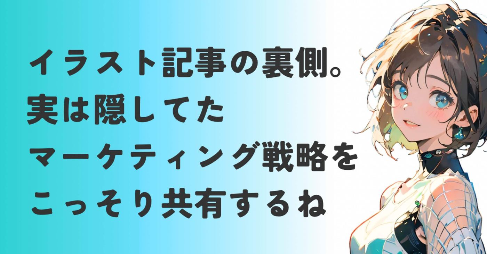
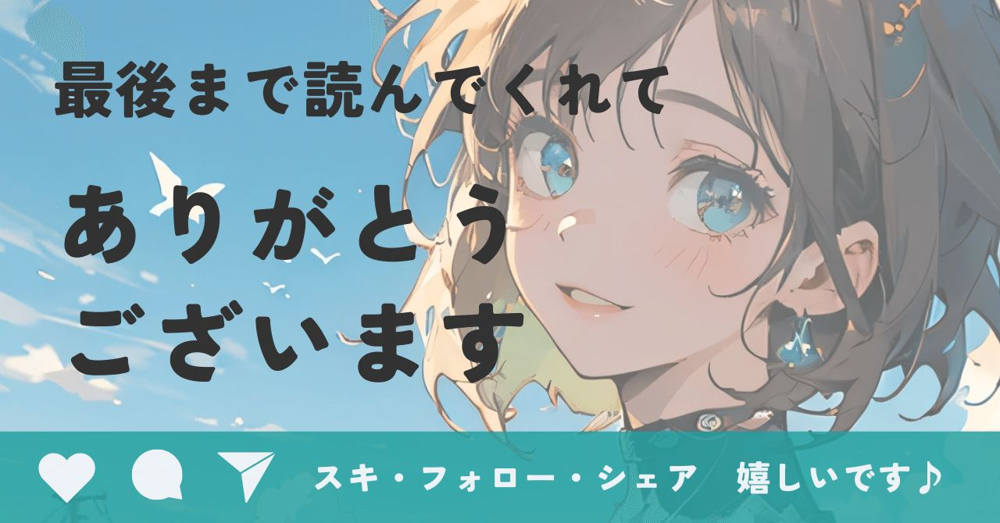

今日も来ていただきありがとうございます。
最近私の記事を読んでくださっている方の中には、こんな違和感を抱いている方がいるんじゃないかと思ってます。
スタートアップとかマーケティングの記事書いてた人間が、なんでレトロポップな猫とか、水彩画のAIイラストを投稿してるのか？
これまで私は、スタートアップ業界の裏側や、
転職のコツ、ビジネスのスタートアップ紹介など、いわゆるビジネス記事を書いてきました。
おかげさまで、多くの記事に100以上のスキをいただき、ビジネスを知ってる人として信頼していただいたと思っています。
そんな私が、急にAIイラストの投稿。
https://note.com/alive_sheep6563/n/necf25137a449
https://note.com/alive_sheep6563/n/nc0592ffd2161
https://note.com/alive_sheep6563/n/nde0895879116
どれもビジネス記事の倍以上、300スキを超えてますね。
さすがnoteアルゴリズム研究家の中野さんの
テクニック。効果抜群です♪
https://note.com/hidehito_n/n/n1d57edd390a1
りっちゃんさんの記事もオススメです！▼
https://note.com/bright_ibis5609/n/n4e89b2d6ec09
バズテクニックも大きいんですけど、私なりの戦略も功を奏したかなと自負してます。
ビジネス系の発信に疲れて趣味に走った？
AIブームに乗っかった？
そう思われているとしたら、
半分正解で、半分間違いかな。
実はあのAIイラスト記事はすべて実験であり、今まで紹介してきたビジネス戦略の一環です。
特にマーケティング領域。
今日はなぜ私がAIイラストに手を出したのか。
その裏にある悔しい原点と、noteという場所で私がやり遂げたいことについて、正直にお話ししようと思います。
出発点は起業家の痛烈な批判
少しだけ昔話をさせてください。
私はこれまでいろんな業界の個人・法人の起業をサポートしてきました。
ビジネス戦略を各分野の専門家と練り、実行
できる施策へ落とし込むのも仕事の1つです。
そんな中である起業家からの強烈な一言。
「あなた会社員なんだから、1から事業を作って売上を出したこと無いでしょう？」
正直、グウの音も出ませんでした。
当時の私はSNSを見るだけでほぼ発信せず、
ゼロから自分ひとりの力で売上を作った経験なんて皆無。
せいぜいメルカリで不用品を売った程度です。
どれだけもっともらしい戦略を語っても、
「机上の空論でしょ？」と言われれば返す言葉がない。
実績のなさという壁を突破できない歯痒さ。
めちゃくちゃ悔しかったです。
「だったら、やってやろうじゃないか」
そんな反骨心に火がついた私が目をつけたのが、noteでした。
私がnoteでやりたいことは2つあります。
1つ目は、PMF（プロダクト・マーケット・フィット）の疑似体験。
誰のどのような困りごとを
どのように解決するのか。
誰にも発掘されていない、
ブルーオーシャン(競合のいない市場)は
どこか。
特に、顧客が無意識に抱えている困り感を
どのように解決するか。
今も仮説検証中です。この記事の話ですね▼
https://note.com/alive_sheep6563/n/ne8ba4f2fe97e
そして2つ目は、知っている知識を使える武器にすること。
支援現場で一番苦手なマーケティング領域。
「誰にどう届けるか？」というフレームワークを、実際に自分の手で回してみたかったんです。
特にこの辺りの話ですね▼
https://note.com/alive_sheep6563/n/n5e2ea8411af4
https://note.com/alive_sheep6563/n/nf4258a6aa0a2
ビジネス書を読んで知ってるフレームワークを増やしても、使えなければ何の意味もない。
こうしてnoteをフレームワークの実験場にすることに決めたんです。
仮説検証の結果とその効果
そこで私がここ最近で取り組んでみたのが、
縦展開と横展開という戦略です▼
https://note.com/alive_sheep6563/n/n7bc7fffc4e7e
これまでマーケティング戦略やスタートアップ紹介など、多くの方にスキとフォローで支えていただいてきました。
そこで、新たなチャレンジをしたいと思ったんです。立てた仮説が、
ビジネス系記事を普段読まない読者層に、
実はマーケティングやスタートアップに
興味を持っている/持ちかけている
潜在読者がいるのではないか？
というもの。
そこで必要になるのが、認知を広げ読者層の
間口を広げるためのコンテンツです。
ここで登場するのが、あのAIイラスト記事。
なぜAIイラストだったのか？
答えはシンプルで、今生成AIに関する世間の
注目度はとても高いから。
そして、言葉の壁を超えて直感的に楽しめる
画像は、圧倒的に広い市場（マス層）にリーチできるからです。
起業支援者が描く猫の絵。
ミスマッチですよね、どうみても。

でもマーケティングの視点で見れば、
高需要な市場に意外性のある供給をぶつける
という、よくある手法です。
いわゆるスキ活のような、地道な営業活動をしたわけではありません。
いや、やってたけど続かなかった。
育休中とはいえ、ワンオペで０歳と２歳の
お世話は結構堪える。特に夕方。
それは置いておき、市場のニーズに合わせて
適切なコンテンツを、適切なタイミングで投下したんです。
その結果はどうだったか？
マーケティングの効果を実感
結果として、すべてのAIイラストの記事は
おかげさまでスキ300超え
投稿すると30人〜50人にフォロー
いただくことができました。
さらにイラストの記事から入ってきた読者が、過去記事を読み、有料マガジンや記事の購入に繋がった。
イラストを見に来たはずが、気づけば
ビジネスの勉強をしていた
そんな動線が機能し始めたのかなと。
荒削りな検証ではありますが、
確かに効果は出てるな〜と実感します。
マーケティングって、凄くないですか？
誰に、何を届けるか
これを適切に設計することで、個人の発信でも
大きな効果を生み出せる。
それを身をもって証明できたと実感しています。
「なんとなく」運用しているように見えるかもですが、アカウント設計にはかなりのこだわりを詰め込んでいます。
個人的な考えですが、
ブランディングとマーケティングは表裏一体。
バラバラに考えていてはうまくいかない。
AIイラストも、ビジネス記事も。
私が計算した世界観の一部なんです。
本日の締め
ここまで読んで、
「なるほど、ちゃんと意味があったんだ」
と納得していただけたら嬉しいです。
でも、今日お話ししたのは、あくまで戦略の表面的な一部に過ぎないんですよね。
私が本当に注力したのは、もっと根幹の部分。
アカウント設計です。
具体的にどんなペルソナを設定したのか？
競合ひしめくnoteの中で、どのように
ブルーオーシャンを見つけるのか？
ビジネスとAIを違和感なく繋げる世界観を
どう作り込んでいくのか？
数百の事例を見てきた私が練り上げた、noteで使えるマーケティング・ブランディング戦略。
次回の記事では、この一次情報を公開しようと思います。
今後noteをガチりたい人
自分のビジネスを加速させたい人
そんな方に役に立つ視点を盛り込みました。
起業支援のプロが試した、noteで使える
マーケティングとブランディング戦略
その答え合わせを、一緒にしてみませんか？
もし楽しみにしてもらえたら嬉しいです。
ごちゃごちゃ書いてるけど、
有料記事を出したよ！
無料部分だけでいいから気軽に読んでみてね！
https://note.com/alive_sheep6563/n/na20ba1411496
というオチでございます。
こんな私にここまでお付き合いいただき、
ありがとうございました！
最近お腹痛いんですけど、カビたパンと同じ袋に入ってたパンって食べたらヤバいですか？
